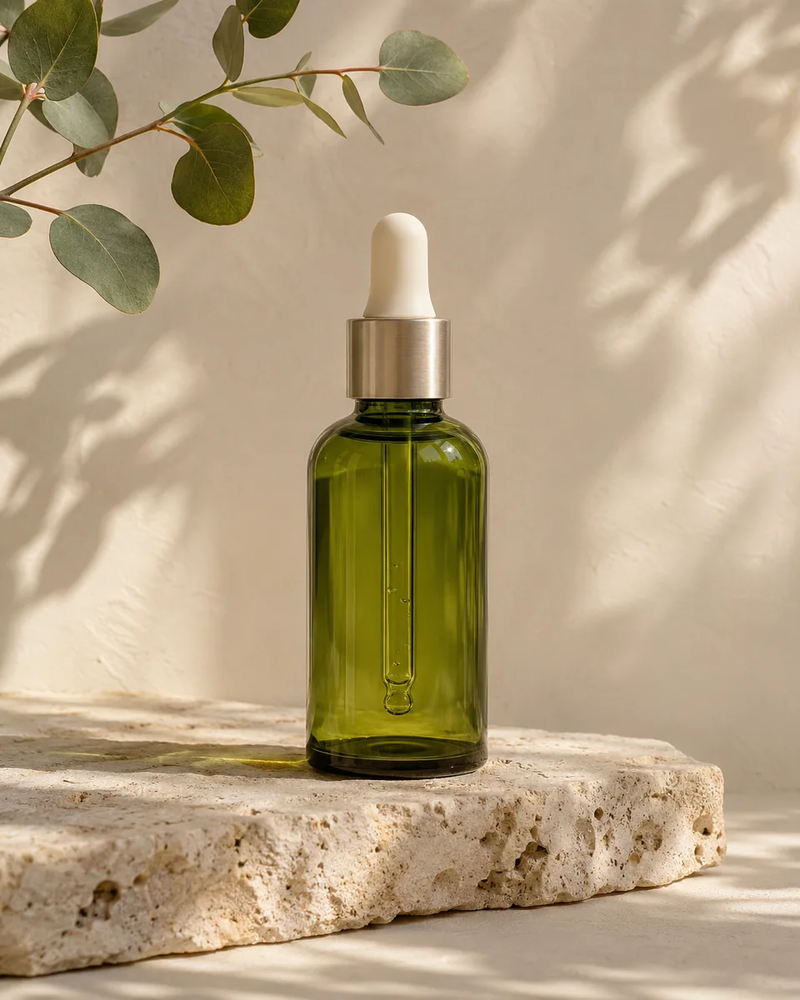
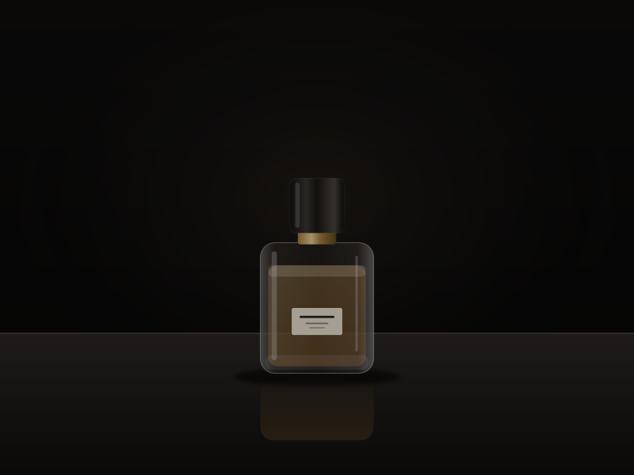
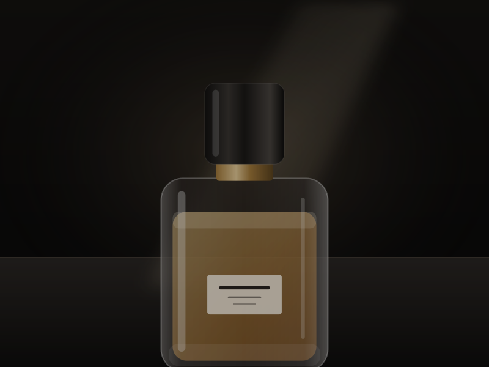
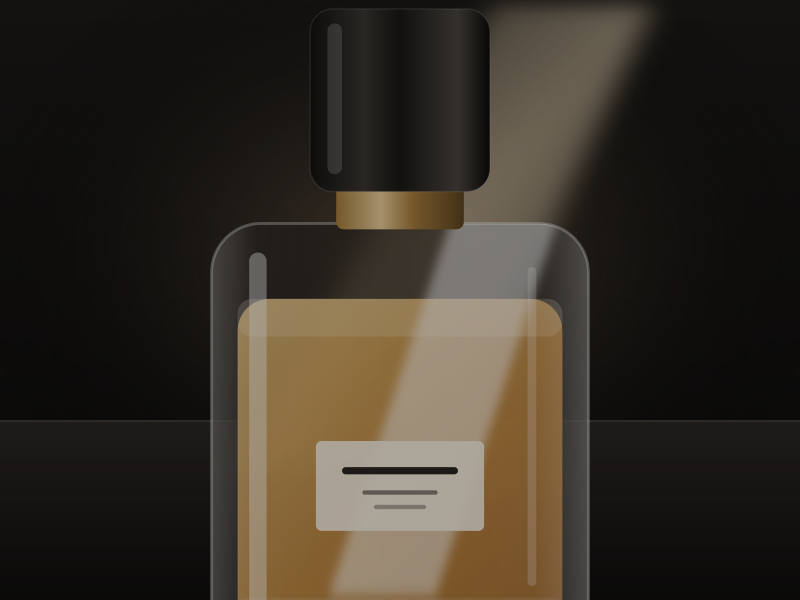
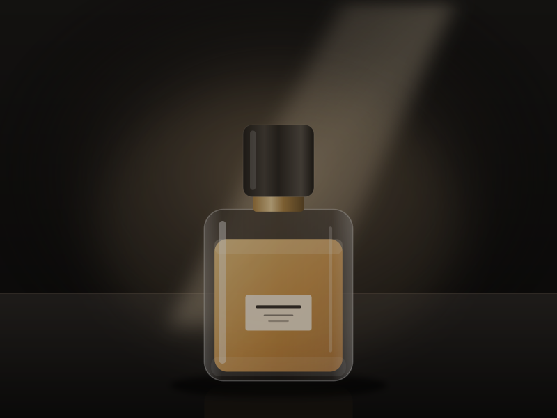

Arahan Foto
Tentukan warna, suasana, cahaya, dan komposisi agar foto produk mengikuti gaya brand Anda.
Konten lama dipisahkan, bukan dihapus. Halaman ini adalah draf materi penggunaan, bukan akun aktif, bukan halaman terautentikasi, dan bukan bukti fitur AI tersedia. Jangan unggah folder dokumentasi_internal ke hosting publik.
Warm cream and sand palette with a muted sage accent, soft natural window light, gentle shadows, natural stone or ceramic surface, calm minimal editorial product photography, preserve the product label, logo, packaging and proportions; do not invent new claims or lettering.
Olive green glass serum bottle with a dropper, centered, portrait 4:5.
Contoh prompt dalam bahasa Inggris ini dapat Anda salin ke platform AI pilihan Anda. Hasil dapat berbeda di tiap platform; Jago Prompt belum menguji perbandingan antarplatform. Panduan gaya membantu menyelaraskan warna dan suasana, bukan menjamin bentuk produk tampil identik. Gambar presentasi di atas dibuat terpisah dari aplikasi Jago Prompt.
Bantuan yang dirancang
Empat konsep fitur untuk membantu Anda merencanakan foto dan video dengan gaya yang senada.

Tentukan warna, suasana, cahaya, dan komposisi agar foto produk mengikuti gaya brand Anda.

01 · 2 dtk
02 · 3 dtk
03 · 3 dtk
04 · 2 dtkRangkai ide menjadi urutan adegan yang jelas, dari pembuka sampai penutup.
Ubah bahasa sehari-hari dan panduan gaya menjadi prompt yang rapi untuk platform AI pilihan Anda.
Pahami cahaya, sudut kamera, dan gerakan lewat contoh yang mudah diikuti.
Contoh storyboard · Arahan videografi
Contoh rancangan iklan parfum 10 detik: buka suasana, dekatkan produk, tunjukkan detail, lalu tutup dengan gambar utama. Storyboard ini contoh terpisah dari video fashion di atas.
Botol parfum diperlihatkan dalam suasana gelap.
Kamera diam · tampilan lebar
Kamera bergerak perlahan mendekati produk.
Kamera mendekat perlahan
Cahaya menyapu dan menyinari detail botol.
Sorotan cahaya · tampilan detail
Produk tampil dengan komposisi iklan premium.
Gambar utama · ruang untuk teks
Empat sketsa ini menunjukkan urutan adegan, bukan video yang sudah dihasilkan.
Cara kerja
Alur yang dirancang untuk Jago Prompt. Saat ini tersedia sebagai pratinjau konsep.
Jelaskan foto atau video yang ingin Anda buat menggunakan bahasa sehari-hari.
Dalam rancangan ini, AI membantu memilih warna, suasana, dan cahaya. Pilihan itu menjadi panduan gaya brand Anda.
Pakai kembali panduan yang sama setiap menyusun prompt di platform AI gambar atau video pilihan Anda.
Ramah untuk pemula
“Lebih hangat”, “terlihat segar”, atau “sedikit dramatis”. Ide sederhana sudah cukup untuk mulai menyusun arah.